<div class="card-container"  >

<p-card [style]="{'width': '80vw', 'margin':'1rem'}">

  
  <div class="row">
    <div class="col-md-9 mx-auto">
      <h2 classe="displayed">Sommaire</h2>
      <div>
        <ul>
          <li>
            <a href="/aide#identification">Identification</a>
          </li>
          <li>
            <a href="/aide#Themes">Thèmes</a>
          </li>
          <li>
            <a href="/aide#evenements">Évènements</a>
          </li>
          <li>
            <a href="/aide#etapes">Étapes</a>
          </li>
          <li>
            <a href="/aide#quizz">Quizz</a>
          </li>
          <li>
            <a href="/aide#defis">Défis</a>
          </li>
        </ul>
      </div>
  
      <h3 class="displayed" id="identification">Identification</h3>
      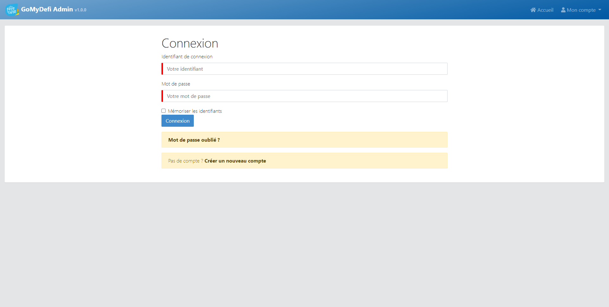
      <div>
        Afin de se connecter il est necessaire de cliquer sur mon compte puis Connexion. Une fois su la page il ne reste plus qu'à rentrer son
        identifiant et son mot de passe et cliquer sur connexion. Si l'identification est un succès vous serez redirigé sur la page d'acceuil.
      </div>
  
      <h3 class="displayed" id="themes">Thèmes</h3>
      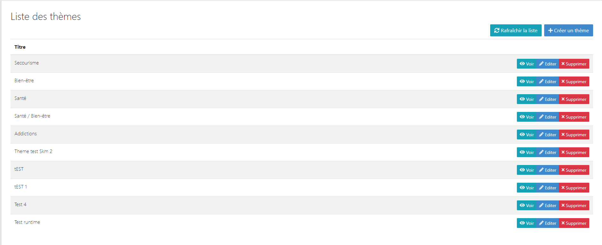
      <div>
        Cette page regroupe tous les thèmes. A partir de cette page il est possible de les ajouter, modifier, voir ou supprimer. Il est
        possible de supprimer un thème UNIQUEMENT lorsqu'il n'est pas lié à une étape. Création d'un parcours Fête De La Vie : La création
        d'un parcours se fait de préférence en saisissant le paramétrage des différentes rubriques suivant cet ordre : 1- Thème, 2- Les Quizz
        avec les Questions et les réponses, 3 - Les Défis, 4 - Les étapes en rattachant les Quizz et les Défis créés précédemment, 5 -
        L'événement en rattachant le thème et les étapes créés précédemment.
      </div>
      <h4 class="displayed">Ajout et modification</h4>
      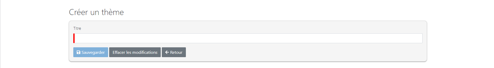
      <div>
        Afin de créer un défi, il suffit uniquement de lui donner un titre. ainsi qu'une description qui correspondra à sont intitulé dans
        l'application Go My Defi
      </div>
  
      <h3 class="displayed" id="evenements">Évènement</h3>
      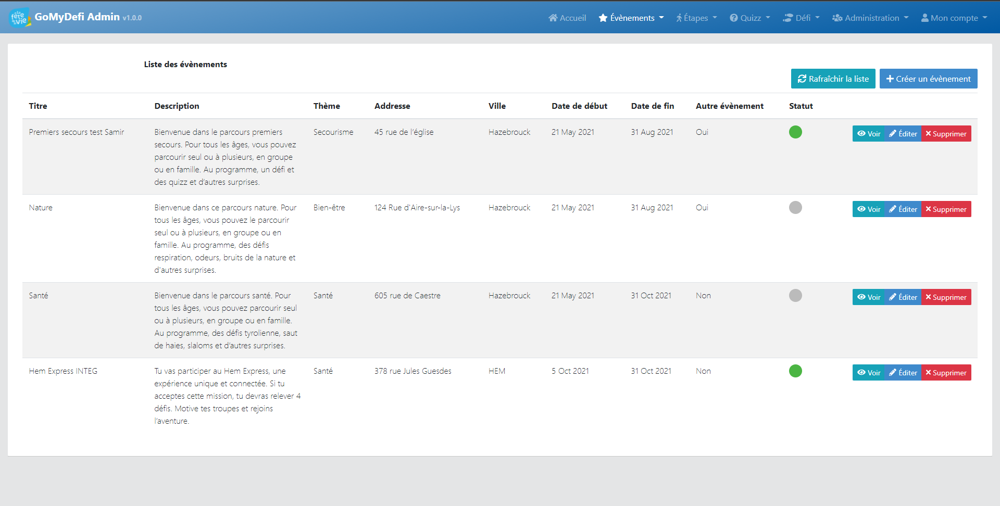
      <div>
        Cette page regroupe tous les parcours, afin d'y acceder, il faut dans le menu cliquer sur évènement puis liste des parcours. A
        partir de cette page il est possible d'ajouter, modifier, voir ou supprimer un évènement. Si le statut d'un évènement est un rond
        vert, alors ce dernier est visible dans l'application mobile GoMyDefi. Il est possible de supprimer un évènement UNIQUEMENT lorsque ce
        dernier ne possède plus aucune étape.
      </div>
  
      <h4 class="displayed">Ajout et modification</h4>
      <div>
        Pour ajouter ou modifier un evenement il est necessaire de remplir au moins tous les champs obligatoires (marqué avec un rectangle
        rouge sur l'image ci-dessous)
      </div>
      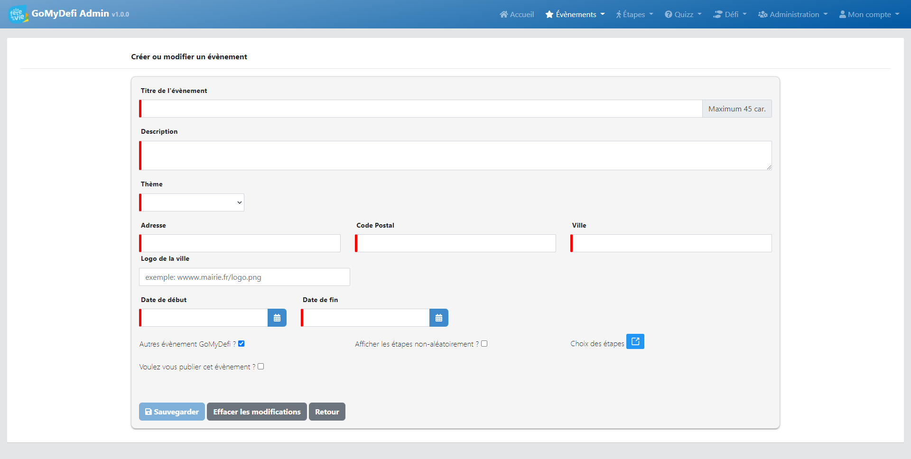
      <div>
        <ul>
          <li>Titre de l'évènement : Nom qui apparaitra après Parcours dans l'application mobile Go My Defi</li>
          <li>Description : Petit texte qui apparait lorsque l'on développe un évènement sur l'application mobile Go My Defi</li>
          <li>Thème : Comme son nom l'indique thème de l'évènement qui apparait en jaune sur la page parcours disponnible</li>
          <li>
            Adresse, Code postal, Ville : Lieu où se déroule l'évènement, il s'agit de l'adresse du point de départ qui apparait après avoir
            appuyé sur un évènement dans l'application mobile
          </li>
          <li>Logo de la ville (facultatif) : Image qui apparait après avoir appuyé sur un évènement dans l'application mobile</li>
          <li>
            Date de début et date de fin : Durée de l'évènement qui détermine la période à laquelle il est possible d'acceder à l'évènement
          </li>
          <li>Autres évènement GoMyDefi : si coché, alors l'évènement apparaitra dans "Mes autres évènements" sur l'application mobile</li>
          <li>
            Afficher les étapes non-aléatoirement : si coché, alors les utilisateurs devront suivre les étapes une à une et dans l'ordre
            défini lors du choix des étapes
          </li>
          <li>
            Voulez-vous publier cet évènement : Si coché alors le statut aura un rond vert, et l'évènement sera accessible dans l'application
            mobile
          </li>
        </ul>
      </div>
  
      <h4 class="displayed">Attribuer des étapes à un évènement</h4>
      <div>Les parcours sont composé d'étapes, afin de les ajouter à l'évènement il faut cliquer sur le bouton choix des étapes</div>
      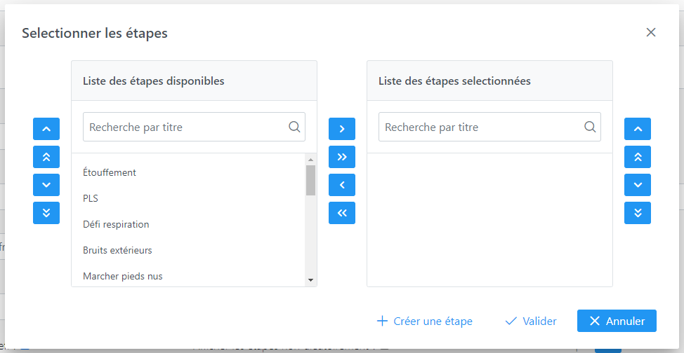
      <div>
        La liste de gauche contient les étapes disponnible, autrement dit, uniquement les étapes créées mais non attribuées. Celle de droit
        représente les étapes qui seront liées à l'évènement. Pour ajouter des étapes, il est nécessaire de cliquer sur l’étape voulu dans la
        colonne de gauche, puis sur le bouton « > ». Pour en enlever de l’événement c’est le bouton « < ». Il est possible de sélectionner
        plusieurs étapes en même temps en cliquant sur ctrl+ clic gauche sur les étapes souhaitées. Il est possible de changer l’ordre avec
        les boutons en forme de flèche vers le haut et vers le bas. La première étape de l'évènement sera la 1ere de la liste de la liste des
        étapes sélectionnées.
      </div>
  
      <h3 class="displayed" id="etapes">Étapes</h3>
      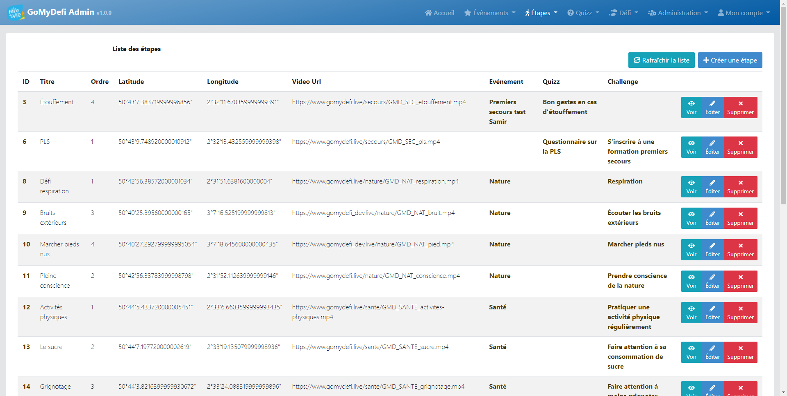
      <div>
        Cette page regroupe toutes les étapes. Aussi bien celle attribuées à un évènement que celle non attribuées. A partir de cette page il
        est possible d'ajouter, modifier, voir ou supprimer une étape. Il est possible de supprimer une étape UNIQUEMENT lorsque cette
        dernière n'est pas attribuée à un évènement.
      </div>
  
      <h4 class="displayed">Ajout et modification</h4>
      <div>
        Pour ajouter ou modifier un evenement il est necessaire de remplir au moins tous les champs obligatoires (marqué avec un rectangle
        rouge sur l'image ci-dessous
      </div>
      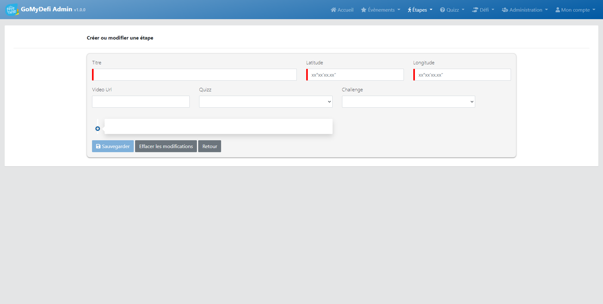
      <div>
        <ul>
          <li>Titre : Nom de l'étape qui sera affiché dans l'application mobile Go My Defi</li>
          <li>
            Latitude et longitude : Coordonné géograpique que l'utilisateur de l'application mobile doit atteindre afin de "trouver" l'étape
          </li>
          <li>Vidéo URL (facultatif) : Lien de la vidéo à visiualiser pour valider l'étape</li>
          <li>Quizz (facultatif) : Quizz auquel l'utilisateur devra répondre afin de valider l'étape</li>
          <li>Défi (facultatif) : Défi que l'utilisateur devra relever afin de valider l'étape</li>
        </ul>
      </div>
  
      <h3 class="displayed" id="quizz">Quizz</h3>
      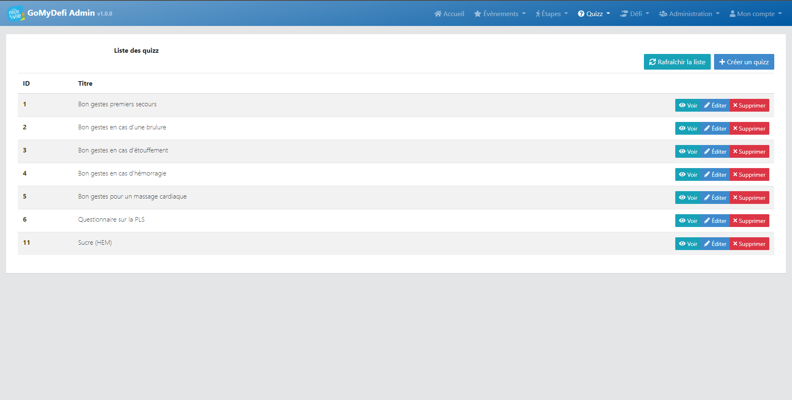
      <div>
        Cette page regroupe tous les quizz. A partir de cette page il est possible de les ajouter, modifier, voir ou supprimer. Il est
        possible de supprimer un quizz UNIQUEMENT lorsque toutes les questions de se dernier à été supprimé et qu'il n'est plus relié à une
        étape.
      </div>
      <h4 class="displayed">Ajout et modification</h4>
      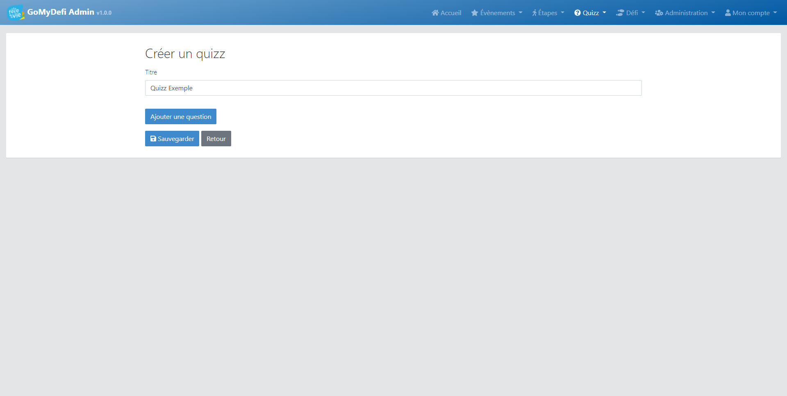
      <div>
        Afin de créer un quizz, il suffit uniquement de lui donner un titre. Pour ajouter des questions, appuyer sur le bouton "Ajouter une
        question"
      </div>
      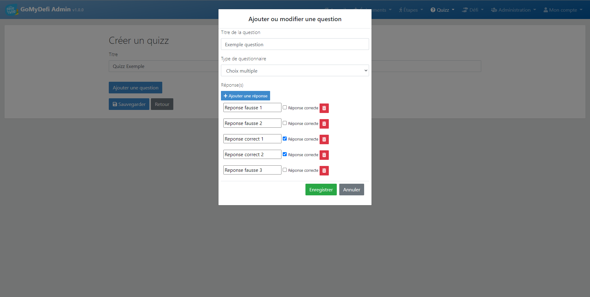
      <div>
        Pour chaque question, Pour chaque question, il est nécessaire de rentrer l’énoncé dans Titre de la question, dire s’il y’a une ou
        plusieurs bonnes réponses avec le type de questionnaire. Puis enfin ajouter les réponses une par une.
      </div>
      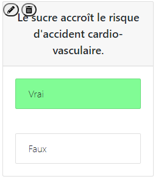
      <div>Pour modifier une question il faut appuuyer sur le crayon, pour la supprimer, sur la poubelle.</div>
  
      <h3 class="displayed" id="defis">Défis</h3>
      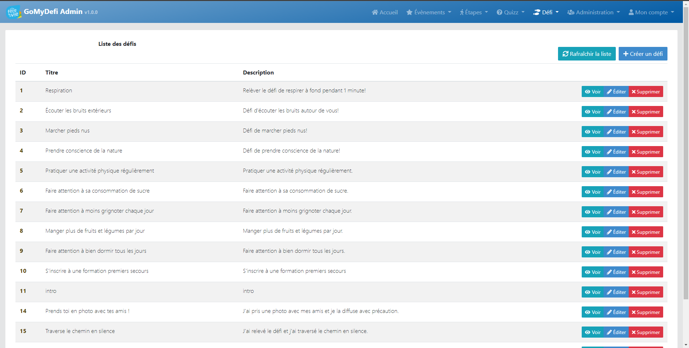
      <div>
        Cette page regroupe tous les défis. A partir de cette page il est possible de les ajouter, modifier, voir ou supprimer. Il est
        possible de supprimer un défi UNIQUEMENT lorsqu'il n'est pas lié à une étape.
      </div>
      <h4 class="displayed">Ajout et modification</h4>
      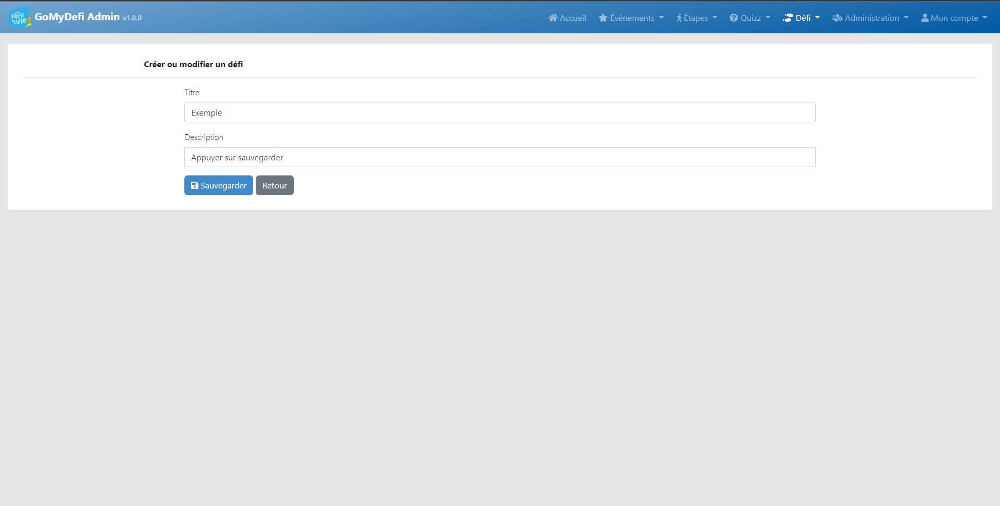
      <div>
        Afin de créer un défi, il suffit uniquement de lui donner un titre. ainsi qu'une description qui correspondra à sont intitulé dans
        l'application Go My Defi
      </div>
    </div>
  </div>
</p-card></div>